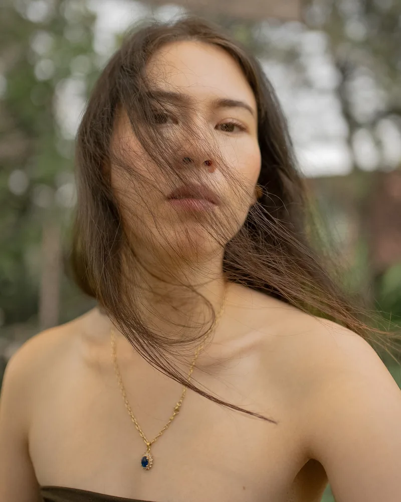
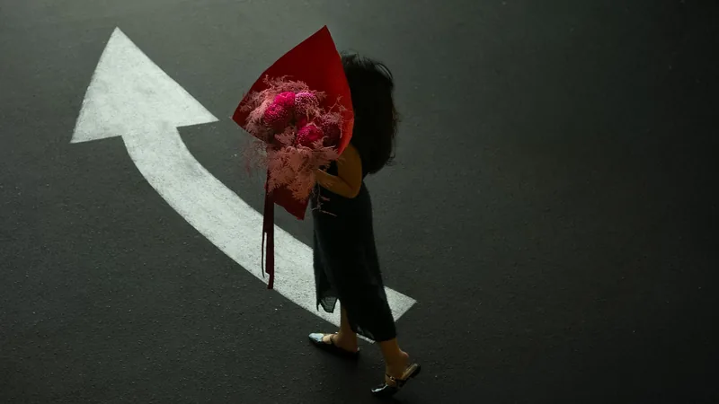
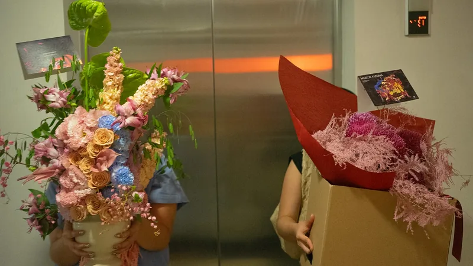

Padova
da 60 €
- Sessione di 1 ora
- 40 foto ritoccate
- Anteprima entro 48 ore
- Una revisione gratuita
Ritratti per coppie, lauree e famiglie, e fotografie per brand, moda e locali. A Padova, a Venezia e dintorni.
Sessioni a Padova da 60 € e a Venezia da 100 €. Sconti per studenti e giovani coppie.




Lavori recenti. Seleziona una foto per vederla più grande.






Tariffe accessibili, pensate anche per studenti e piccole attività. Scrivimi e ne parliamo.
Il giorno della laurea o un servizio nei giorni dopo, con la corona d'alloro e le persone che contano.
Servizi di coppia, fidanzamento e pre-wedding a Padova e Venezia.
Ritratti di famiglia, all'aperto o nel luogo che preferite.
Lookbook, foto indossate, dettagli dei prodotti e contenuti per i social.
Piatti, bevande, ambienti e le persone che ci lavorano.
Foto pulite per e-commerce, menu e cataloghi.
Il tuo cane, il tuo gatto, o tutta la famiglia insieme a loro.
Hai un'altra idea? Sono disponibile per collaborazioni di ogni tipo. Richiedi un preventivo
Prezzi di partenza per una sessione di 1 ora.
da 60 €
da 100 €
Scrivimi per sapere la disponibilità e ricevere un prezzo adatto a ciò che ti serve.
Ciao! Sono Alya Syifa, una fotografa di Giacarta. Ora vivo a Padova, a un breve viaggio in treno da Venezia.
Fotografo coppie, ritratti individuali, lauree e famiglie. Collaboro anche con piccoli brand per la fotografia di prodotto: moda e gioielli, composizioni floreali, cibo e bevande. E fotografo anche gli animali.
Parlo fluentemente inglese e indonesiano.
Accetto un numero limitato di servizi al mese, così ognuno riceve tutta la mia attenzione. Scrivimi in anticipo per fissare la data, indicando il tipo di servizio, la data e il luogo.